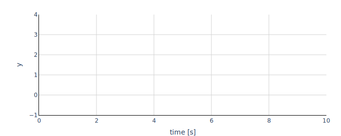

The StateSpace model implements the equation
der(x) = Ax + Bu
y = Cx + Du
where
A is an n by n matrix, where n is the number of states,B is an n by m matrix, where m is the number of inputs,C is an r by n matrix, where r is the number of outputs,D is an r by m matrix, andx0 is the initial value of xwith the variables
| Variable | Start | Unit | Causality | Variability | Description |
|---|---|---|---|---|---|
| time | independent | continuous | Simulation time | ||
| m | 3 | structuralParameter | tunable | Number of inputs | |
| n | 3 | structuralParameter | tunable | Number of states | |
| r | 3 | structuralParameter | tunable | Number of outputs | |
| A | 1 0 0 0 1 0 0 0 1 | parameter | tunable | Matrix coefficient A | |
| B | 1 0 0 0 1 0 0 0 1 | parameter | tunable | Matrix coefficient B | |
| C | 1 0 0 0 1 0 0 0 1 | parameter | tunable | Matrix coefficient C | |
| D | 1 0 0 0 1 0 0 0 1 | parameter | tunable | Matrix coefficient D | |
| x0 | 0 0 0 | parameter | tunable | Initial state vector | |
| u | 1 2 3 | input | continuous | Input vector | |
| y | output | continuous | Output vector | ||
| x | local | continuous | State vector | ||
| der(x) | local | continuous | Derivative of the state vector |
The plot shows the trajectories of the output variables computed with fmusim.
fmusim --interface-type me --solver cvode --output-interval 1 --output-file StateSpace_out.csv StateSpace.fmu